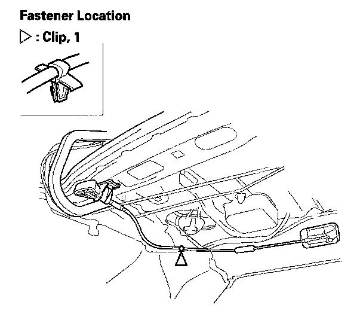
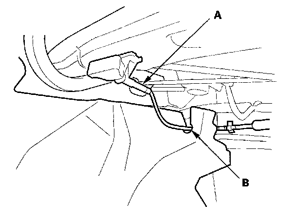
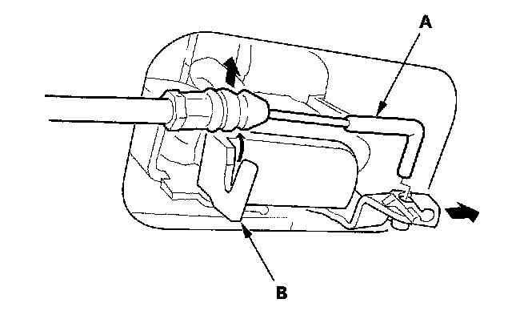
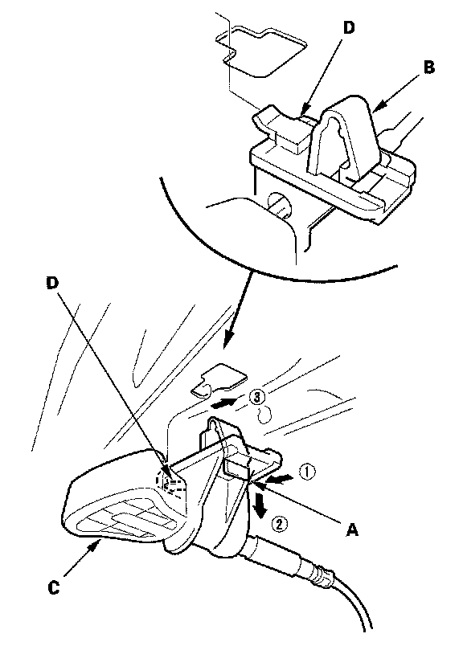

Rear Seat-Back Release Lever/Cable
Rear Seat-back Release Lever/Cable Removal/InstallationFold Down Rear Seat/Split Fold Down Rear Seat
NOTE: Take care not to bend or scratch the interior trim.
1. Open the trunk lid.

2. From the trunk room, detach the cable clip.

3. 2-door: Remove the rear seat-back release cable (A) out through the slit (B) in the trim panel.

4. Disconnect the seat-back release cable (A) from the seat-back latch (B).

5. Push the tab (A) to release the hook (B), and rotate the seat-back release lever (C) clockwise to release the hook (D).
6. Install the release lever/cable in the reverse order of removal, and note these items:
- Make sure the release cable is connected securely.
- Make sure the seat-back locks securely and unlocks properly.